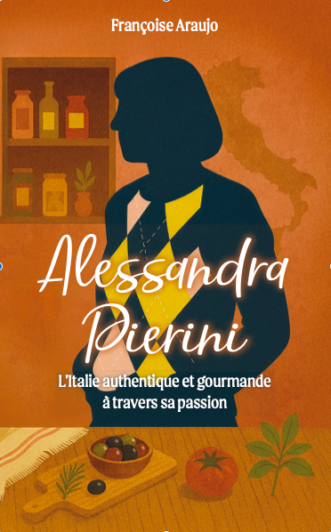

Biographe à Paris – Écrire et transmettre votre histoire de vie
Biographe à Paris, je vous accompagne dans l’écriture de votre histoire de vie, qu’il s’agisse d’une biographie familiale, personnelle ou professionnelle, afin de transmettre un récit fidèle, vivant et durable.
Je suis biographe certifiée Aleph à Paris.
J’accompagne les personnes qui souhaitent raconter leur histoire de vie et la transmettre sous forme de livre.
Chaque parcours est unique. Mon rôle est de transformer vos souvenirs en un récit structuré, fidèle et vivant, écrit à partir d’entretiens.
Faire appel à un biographe, c’est prendre le temps de transmettre une mémoire, une histoire familiale ou un parcours personnel.
Une approche sensible et artistique de l’écriture
Mon travail de biographe est nourri par une expérience artistique de l’écriture, notamment à travers la musique, les chansons et la narration.
Entrer dans l’universMusique du générique — Adoración Araujo
Ce générique illustre mon univers d’écriture et ma sensibilité artistique. Mon parcours d’autrice nourrit ma manière de raconter les histoires, avec une attention particulière portée au rythme, à la mémoire et à l’émotion.
Auteure de plus de quarante chansons enregistrées à la SACEM et à l’ADAMI, en collaboration avec des compositeurs, je peux également accompagner des artistes, auteurs ou interprètes dans l’écriture de récits liés à la musique, à la création ou à un parcours artistique.
Un exemple de récit de vie

Alessandra Pierini – L’Italie authentique et gourmande à travers sa passion
Mais ma mère, elle, restait debout. Toujours aux fourneaux, une louche à la main. Elle se contentait de goûter, grignoter par-ci par-là, veillant à ce que chaque assiette soit servie à la perfection. Une perfectionniste. Toujours.
La cuisine était pensée pour ces moments. Sur la grande table, une énorme planche en bois, fabriquée par mon oncle menuisier, trônait les jours de préparation. Là, ma mère pétrissait, étalait la pâte, fixait la machine manuelle avec sa molette, et moi, assise en face, je tournais la manivelle.
J’adorais ce rôle. D’abord, on passait la pâte entre les rouleaux, au cran le plus large, puis on resserrait, petit à petit. Un geste précis, presque hypnotique. Les longues bandes de pâte souple s’étiraient devant nous. Si elles n’étaient pas parfaites, on les repliait, on les repassait, jusqu’à ce qu’elles aient la texture idéale.
Qu’est-ce qu’un biographe ?
Un biographe est un écrivain professionnel spécialisé dans la rédaction de récits de vie. Il transforme des souvenirs, des témoignages et des entretiens en un livre cohérent et structuré.
Son rôle est de :
écouter
structurer
écrire fidèlement votre histoire
Pourquoi écrire une biographie ?
Écrire sa biographie permet de :
transmettre son histoire familiale
laisser une trace aux générations futures
donner du sens à son parcours
structurer ses souvenirs
partager une expérience de vie
Pour qui ?
Ce service s’adresse à :
Les particuliers
souhaitant transmettre leur mémoire
Les familles
pour créer un livre de transmission
Les professionnels
pour raconter un parcours ou une entreprise
Comment se déroule une biographie ?
1. Premier échange
Définition du projet et des attentes
2. Entretiens
Rencontres à Paris ou à distance
3. Écriture
Transformation des entretiens en récit
4. Relecture
Validation du texte avec vous
5. Finalisation
Livre prêt à être imprimé ou transmis
Mon approche
J’accorde une grande importance à l’écoute et à la fidélité du récit. Chaque biographie est écrite dans le respect de la parole, avec une attention particulière portée à la sensibilité de chaque histoire.
Ce qui donne sens à mon travail
✔ Biographe certifiée Aleph
✔ Expérience d’écriture artistique (SACEM / ADAMI)
✔ Collaboration avec des compositeurs
✔ Approche humaine et sensible
✔ Écriture sur mesure
Exemples de récits
histoire de vie familiale
parcours personnel
récit professionnel
parcours artistique ou musical
mémoire de vie riche et singulière
FAQ
Combien de temps dure une biographie ?
Quelques semaines à plusieurs mois selon le projet.
Dois-je savoir écrire ?
Non, je m’occupe de tout.
Où se déroulent les entretiens ?
À Paris ou à distance.
Est-ce confidentiel ?
Oui, totalement.
Peut-on offrir une biographie ?
Oui, c’est un cadeau de transmission.
Mon parcours
Je suis biographe certifiée Aleph à Paris. Mon travail consiste à transformer des vies en récits écrits, avec écoute, sensibilité et rigueur. Mon expérience artistique dans l’écriture (SACEM / ADAMI), nourrie par des collaborations avec des compositeurs, enrichit ma manière de raconter les histoires.
Vous souhaitez écrire votre biographie ?
Contactez-moi pour un premier échange sur votre projet.
faraujo.marouani@gmail.com